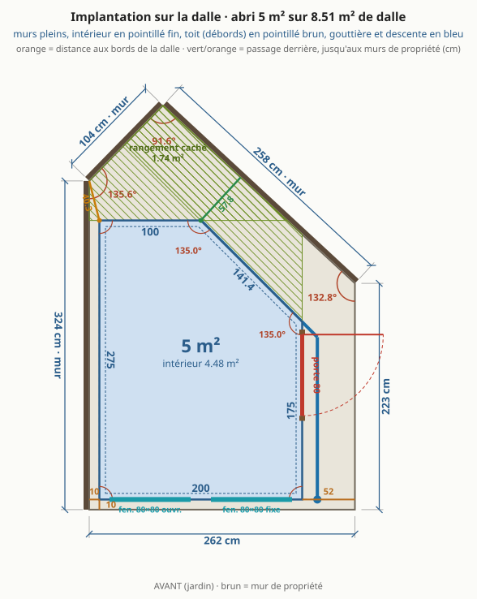
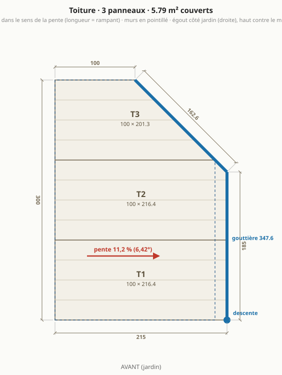
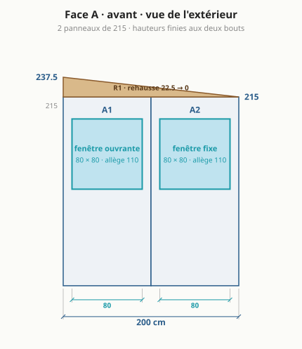
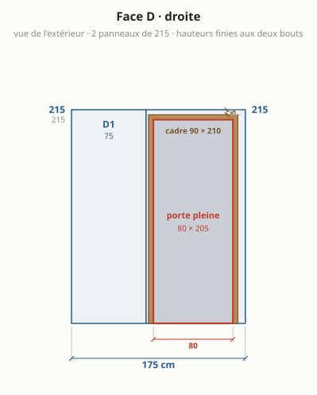
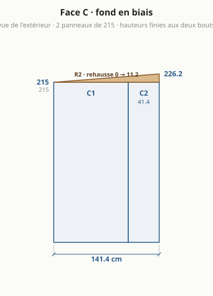
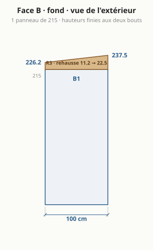
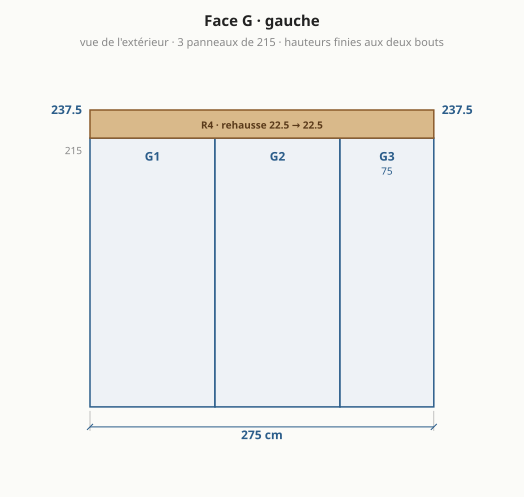
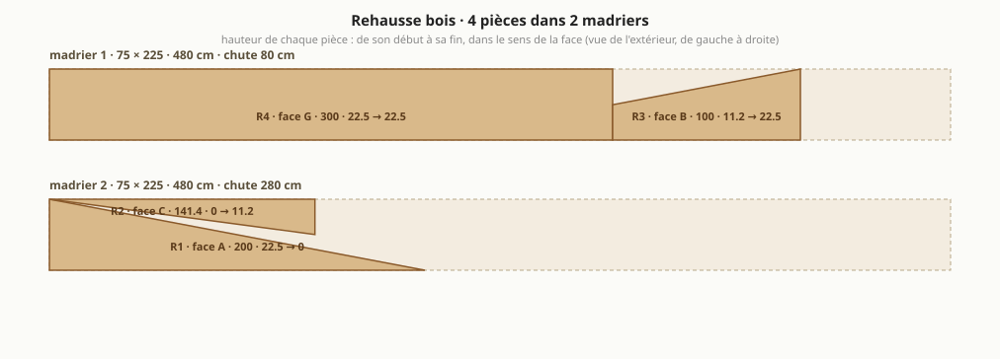

Abri de jardin : le bureau à cinq murs
Généré par
npm run emitdepuisparams.json(blocabri_v3) etsite/src/compute.ts: ne pas éditer à la main. Autres versions : version 1, version 2, version 4. Autres formes étudiées : variantes.md.

En bref
- Dalle existante : 8,51 m², côtés 262 / 223 / 258 / 104 / 324 cm, murs de propriété à gauche et au fond.
- 4,48 m² intérieur (5 m² de murs), 57,8 cm de passage derrière.
- 5 murs en panneaux sandwich 6 cm autoportants : façade 200, droite 175, fond en biais 141,4, fond 100, gauche 275 cm.
- Toit mono-pente vers la droite (jardin), 6,42° : 237,5 cm contre le mur gauche, 215 cm côté porte.
- Porte pleine 80 × 205 sur le mur droit, 2 fenêtres en façade, bureau en L sur la façade et le mur gauche.
- Budget indicatif : 3 166 € à 4 284 € HT (coque 3 143 €, aménagement 582 €).
- Formalités : emprise au sol 5 m², surface de plancher 4,48 m² ⇒ aucune formalité.
À trancher
- Toit : vers la droite (jardin), chute 22,5 cm (6,42°). Madrier 75 × 225 classe 4 : section courante, à vérifier en classe 4.
- Formalités : emprise au sol 5 m² (les débords de toit, simples et en l'air, n'entrent pas dans l'emprise au sol : Code de l'urbanisme R*420-1), surface de plancher 4,48 m² ⇒ aucune formalité (seuils 5 puis 20 m²). secteur protégé ou abords d'un monument historique : déclaration préalable même sous le seuil ; le PLU (implantation, hauteur, distance aux limites) s'applique dans tous les cas.
- Lit 75 × 190 : déplié au milieu, le pied sous un bureau, fauteuil et tabouret rangés.
- Portée du toit (~2 m au plus long) en 6 cm sans panne : à confirmer dans le tableau du fabricant.
- Angles non droits (135°, 135°) : profils d'angle pliés sur mesure.
Plans
Implantation sur la dalle
Plan de sol

Toiture

Face A · façade (jardin)

Face D · droite (porte)

Face C · fond en biais

Face B · fond

Face G · gauche

Rehausse bois : débit des madriers

Dimensions
| face | longueur ext. | longueur int. | hauteur finie (début → fin) | angle au début |
|---|---|---|---|---|
| A · avant | 200 cm | 188 cm | 237,5 → 215 cm | 90° |
| D · droite | 175 cm | 166,5 cm | 215 → 215 cm | 90° |
| C · fond en biais | 141,4 cm | 136,5 cm | 215 → 226,2 cm | 135° |
| B · fond | 100 cm | 91,5 cm | 226,2 → 237,5 cm | 135° |
| G · gauche | 275 cm | 263 cm | 237,5 → 237,5 cm | 90° |
Murs 5 m² · intérieur 4,48 m² (murs de 6 cm retirés) · sol libre hors bureaux 2,26 m² · hauteur sous plafond 2,32 m devant, 2,09 m au plus bas (plancher isolé déduit).
Débit
Panneaux de mur (hauteur 215 cm, pose verticale)
| pièce | largeur | provenance | découpe |
|---|---|---|---|
| A1 | 100 cm | panneau entier | fenêtre 80 × 80 |
| A2 | 100 cm | panneau entier | fenêtre 80 × 80 |
| D1 | 75 cm | panneau recoupé | – |
| D2 | 100 cm | panneau entier | porte 90 × 210 |
| C1 | 100 cm | panneau entier | – |
| C2 | 41,4 cm | panneau recoupé | – |
| B1 | 100 cm | panneau entier | – |
| G1 | 100 cm | panneau entier | – |
| G2 | 100 cm | panneau entier | – |
| G3 | 75 cm | panneau recoupé | – |
10 panneaux de mur de 100 × 215 à commander (les bandes étroites sortent des chutes).
Panneaux de toit (dans le sens de la pente, longueur = rampant)
| pièce | largeur | longueur à commander | coupe |
|---|---|---|---|
| T1 | 100 cm | 216,4 cm | entier, coupes droites |
| T2 | 100 cm | 216,4 cm | un bord en biais le long du mur du fond |
| T3 | 75 cm | 176,1 cm | refendu en largeur, un bord en biais le long du mur du fond |
Débords : 15 cm à droite (égout, au-dessus de la porte), 0 cm contre le mur de propriété, rives avant et fond affleurantes (bavette de rive). Surface couverte 5,25 m².
Rehausse bois (madrier 75 × 225, stock 480 cm)
| pièce | face | longueur | hauteur début → fin |
|---|---|---|---|
| R1 | A | 200 cm | 22,5 → 0 cm |
| R2 | C | 141,4 cm | 0 → 11,2 cm |
| R3 | B | 100 cm | 11,2 → 22,5 cm |
| R4 | G | 275 cm | 22,5 → 22,5 cm |
2 madriers : n°1 = R4 puis R1 + R2 (chute 5 cm) ; n°2 = R3 (chute 380 cm). Deux pièces sur un même tronçon = une seule coupe en biais.
Gouttière et profils
- Gouttière 322,6 cm en 2 tronçons (D 160 + C 162,6) : le long du pan en biais puis du mur droit, avec un angle, au-dessus de la porte ; descente au coin avant droit, côté jardin (récupérateur d'eau possible). Aucune eau dans le passage arrière ni au pied du mur de propriété.
- 5 angles : G/A 90°, A/D 90°, D/C 135°, C/B 135°, B/G 90° ; hauteur de chaque angle = hauteur finie du coin.
- Rail de pied sur tout le périmètre (8,91 m), bavettes de rive sur les côtés A et B.
Ouvertures
| ouverture | taille | où | détail |
|---|---|---|---|
| porte pleine | 80 × 205 (cadre 90 × 210) | face D, de 82,5 à 162,5 cm depuis la façade | ouvre vers l'extérieur ; cadre à 5 cm du mur du fond (face intérieure) et sous le haut du mur |
| fenêtre oscillo-battante | 80 × 80 | face A, de 10 à 90 cm depuis le coin gauche | allège 110 cm, au-dessus du bureau, dans un seul panneau |
| fenêtre fixe | 80 × 80 | face A, de 110 à 190 cm depuis le coin gauche | allège 110 cm, au-dessus du bureau, dans un seul panneau |
Aménagement
| élément | taille | place |
|---|---|---|
| bureau gauche | 60 × 263 cm | tout le mur gauche |
| bureau de façade | 50 × 188 cm | tout le mur de façade |
| fauteuil de bureau | 70 × 70 cm | devant le bureau gauche |
| tabouret | 30 × 30 cm | devant le bureau de façade |
| lit pliant (déplié) | 75 × 190 cm | au milieu, pied sous un bureau, sièges rangés |
Budget indicatif (HT, fourniture seule)
| poste | quantité | prix unitaire | montant |
|---|---|---|---|
| Panneaux sandwich mur 60 mm (à commander) | 21,5 m² | 35 € | 752 € |
| Surcoût fixation cachée (mur) | 21,5 m² | 5 € | 108 € |
| Panneaux sandwich toit 60 mm (à longueur) | 6,09 m² | 35 € | 213 € |
| Rehausse bois (madriers 75 × 225) | 9,6 ml | 10 € | 96 € |
| Porte pleine isolée + cadre | 1 u | 450 € | 450 € |
| Fenêtre fixe | 1 u | 200 € | 200 € |
| Fenêtre ouvrante | 1 u | 320 € | 320 € |
| Profils (angles int. + ext., rail de pied, rives) | 34,5 ml | 12 € | 414 € |
| Visserie + étanchéité | 1 forfait | 160 € | 160 € |
| Gouttière + descente | 1 forfait | 130 € | 130 € |
| Ventilation | 1 forfait | 150 € | 150 € |
| Livraison des panneaux | 1 forfait | 150 € | 150 € |
| Plancher isolé | 4,48 m² | 45 € | 202 € |
| Électricité (multiprise, éclairage) | 1 forfait | 80 € | 80 € |
| Chauffage | 1 forfait | 120 € | 120 € |
| Store | 1 forfait | 60 € | 60 € |
| Finition intérieure | 1 forfait | 120 € | 120 € |
| coque | 3 143 € | ||
| aménagement | 582 € | ||
| total | 3 725 € (3 166 € à 4 284 €, ±15 %) |
Prix médians du marché, à confirmer par devis (prix_indicatifs_eur). Porte et fenêtres au prix des blocs standard.
Pourquoi cette version
Comparée à la version 2, dont elle reprend les réglages.
| version 2 (abri-v2.md) | version 3 | |
|---|---|---|
| murs (extérieur) | 5 m² | 5 m² |
| intérieur | 4,46 m² | 4,48 m² |
| emprise au sol (débords de toit exclus, R*420-1) | 5 m² | 5 m² |
| formalités (seuils 5 puis 20 m²) | aucune formalité | aucune formalité |
| murs | 4 : A 200 · D 200 · B 223,6 · G 300 cm | 5 : A 200 · D 175 · C 141,4 · B 100 · G 275 cm |
| angles | 90° · 90° · 116,6° · 63,4° | 90° · 90° · 135° · 135° · 90° |
| faces en panneaux entiers | A, D, G | A, B |
| bandes de mur de moins de 30 cm | 1 | 0 |
| panneaux de mur à commander | 10 | 10 |
| passage derrière l'abri | 51,5 cm | 57,8 cm |
| sens du toit | vers la droite (jardin) | vers la droite (jardin) |
| pente | 11,2 % (6,42°), chute 22,5 cm | 11,2 % (6,42°), chute 22,5 cm |
| portée du toit sans panne | 2 m | 2 m |
| panneaux de toit | 3, dont 2 coupé(s) en biais et 0 de moins de 30 cm de large | 3, dont 2 coupé(s) en biais et 0 de moins de 30 cm de large |
| gouttière et descente | 432,9 cm sur D + B, descente devant à droite, côté jardin | 322,6 cm sur D + C, descente devant à droite, côté jardin |
| rehausse | 3 pièces, 2 madrier(s) 75 × 225 | 4 pièces, 2 madrier(s) 75 × 225 |
| hauteurs finies des coins | 237,5 · 215 · 215 · 237,5 cm | 237,5 · 215 · 215 · 226,2 · 237,5 cm |
| espace caché derrière l'abri | 1,9 m², jusqu'à 115 cm de profondeur | 1,74 m², jusqu'à 113 cm de profondeur |
| porte | pleine, 80 × 205, débord de toit au-dessus : 15 cm | pleine, 80 × 205, débord de toit au-dessus : 15 cm |
| fenêtres en façade | 80 ouvrante + 80 fixe | 80 ouvrante + 80 fixe |
| sol libre hors bureaux | 2,21 m² | 2,26 m² |
| lit | 75 × 190, pliant, posé au sol libre | 75 × 190, pliant, posé au sol libre |
| budget indicatif HT | 3 671 € (coque 3 090 €) | 3 725 € (coque 3 143 €) |
Ce que cette disposition apporte
- La surface de la version 2, mieux dessinée : 5 m² de murs et 4,48 m² d'intérieur (version 2 : 5 et 4,46 m²), donc toujours sans formalité. Mais le fond de la pièce est une travée d'équerre large d'un mètre, plus une pointe à 63° : 0,05 m² de sol libre en plus à surface égale.
- Plus aucun angle aigu. Les deux angles qui ne sont pas droits sont identiques, 135° : un seul profil d'angle plié à commander en deux exemplaires, et un bout de bureau gauche d'équerre contre le mur du fond.
- La façade et le mur du fond restent en panneaux entiers (200 et 100). Les murs gauche (275) et droit (175) ont chacun une bande de 75 cm, et le pan à 45° une bande de 41 cm. Les bandes sont placées là où on les atteint : celle du mur gauche est en bout côté façade, celle du mur droit côté façade aussi (le module entier du fond reçoit le cadre de la porte), celle du pan donne sur le passage.
- Le pan à 45° longe le mur de propriété (incliné à 42,8°) : le passage derrière garde une largeur presque constante au lieu de s'ouvrir en entonnoir, et il est plus large que dans la version 2 : 57 cm au plus étroit contre 51 cm. La tondeuse manuelle y passe à l'aise.
- 10 cm de dalle visibles à gauche et devant : l'abri ne vient pas au ras de la dalle. Devant, le rail de pied et sa bavette s'égouttent sur le béton et pas dans l'herbe ; à gauche, le vide contre le mur de propriété reste assez large pour être fermé proprement (bavette devant, grillage au fond) et pour que l'eau et les feuilles n'y restent pas.
- Tout ce que la version 2 apporte reste vrai ici : porte pleine sur le côté, à l'abri des regards de l'étage voisin ; lumière de côté sur les écrans du bureau gauche ; toit vers le jardin, portée de 2 m, madrier courant. Voir abri-v2.md.
Ce que la version 3 perd
- Rangement caché derrière l'abri : 1,74 m², contre 1,9 m² dans la version 2, passage compris. Le cinquième mur occupe le fond de la dalle, mais l'abri raccourci en rend une partie. La tondeuse manuelle, les outils à manche, le tuyau et quelques sacs y tiennent, contre le mur de propriété.
- Un mur, un angle et une pièce de rehausse de plus, et une gouttière en deux tronçons avec un angle (322.6 cm en tout) : l'eau du fond du toit sort par le pan à 45°, il faut donc la recueillir là aussi pour qu'elle ne tombe pas dans le passage.
- Budget : 54 € d'écart avec la version 2 (voir le tableau), pour les bandes de panneau et la pièce de rehausse en plus.
- Le lit de 190 rabattable contre un mur ne tient toujours pas : le fond fait 100 cm et le pan 141 cm. Lit pliant posé au sol, comme en version 2.
Pourquoi
- La forme reste un vrai 45° : mur gauche 275, mur droit 175, fond 100. Les deux murs ont été raccourcis de la même longueur, il reste donc toujours un coin de 100 × 100 à fermer, soit un pan à 45° de 141,4 cm, sans cote ajustée.
- Pourquoi 25 cm de moins et pas 20 : à 280 et 180 l'abri fait 5,10 m² de murs, juste au-dessus du seuil, et demande une déclaration préalable pour 0,10 m². À 275 et 175 il fait 5,00 m² : aucune formalité a priori. Pour revenir à 20, changer les deux nombres de
cotes_cm. À exactement 5,00 m², une mairie pointilleuse peut discuter : 274 et 174 donnent 4,98 m². - Pourquoi comparer à la version 2 : la version 3 en reprend tous les réglages (
herite), seuls la forme et la bande gauche changent. Le tableau isole donc l'effet du cinquième mur.
Conseils que les plans ne montrent pas
- Le mur gauche se monte à plat puis se lève (voir les conseils de la version 2) : on ne visse rien dans le vide de 10 cm. Le fermer devant par une bavette et au fond par un grillage.
- Le modèle dessine la gouttière sur les deux bords d'égout, mais pas sa pièce d'angle à 135° ni la pente à lui donner vers la descente : à prévoir à la commande.
- Le pan à 45° reçoit une pièce de rehausse en biais dont la hauteur varie le long du mur : c'est une coupe de plus dans le madrier, pas une difficulté.
- Même sans formalité, vérifier au PLU la règle d'implantation par rapport à la limite (à 10 cm du mur de propriété, l'abri n'est ni en limite ni à 3 m).